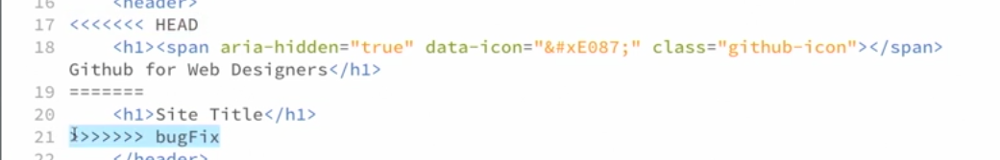
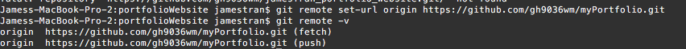

Git &Github
- Git Basics
- Your Identity:
$git config --global user.name "John Doe"
$git config --global user.email johndoe@example.com - Initializing git:
$git init - Check Status:
$git status - Adding files to Stagging area
$git add fileName (individual) or $git add . (for multiple) - Commiting Files from Stagging area
$git commit -m "message"
to check: $git log
NOTE: We can skip adding to stagging area directly to commit by execute:
$git commit -a -m "message" - After all files were commited, then some file got changed, it will be shown as soon as you type $git status
To check the change : $git diff ( the minus sign means "before change" positive sign "after change")
NOTE: after adding to stagging area that changed file, if you want to check the differences should use: $git diff --staged - Creating Branch
$ git branch branchName
Switching branch: $git checkout branchName
Switching and creating a branch at the same time: $git checkout -b branchName
List branches and show current one: $git branch - Merging a Branch:
NOTE: Making sure you are currently on the branch that you want to merge to
Execute: $git merge branchOfMergeName
Merging conflict fix: we have to do mannually by go back to the file, git will notate what would be a conflict then make your own decision:
 - Managing Branches:
-USEFUL COMMANDS to check if any branch was merged or wasn's merged:
$git branch --merged or $git branch --no-merge
-DELETE Branch: $git branch -d branchName
-Some how git would not allow us to delete because the file wasn't merged yet. If we really want to forcely delete it by executing this:
$git branch -D branchName
- Your Identity:
- Github Basics
- Pushing file to remote Repos:
1-Create new repository on Github
2-Copy the URL and go back to the terminal to add that remote repos to local:
$git remote add origin copyURLLink
3- Push files from local master up to the remote repos named origin that we name on step2:
$git push -u origin master
- Pushing file to remote Repos:
- Good Resources for Git
- Pro Git Book
- Git Essential Training on Lynda.com
- Github for Webdesign References
- Personal note
- Change the new url for existing origin remote Git repository with Terminal:
Execute: $git remote set -url origin NEW URL

- Change the new url for existing origin remote Git repository with Terminal: